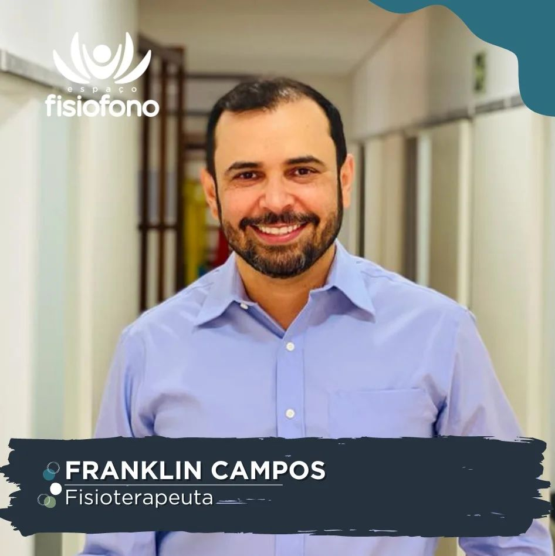
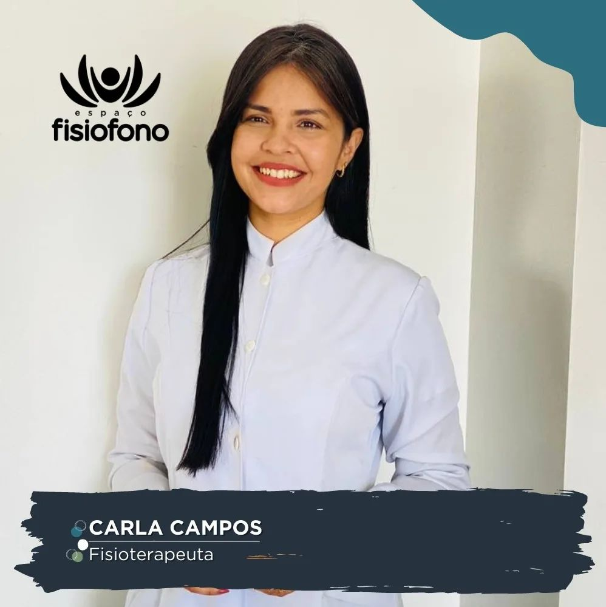
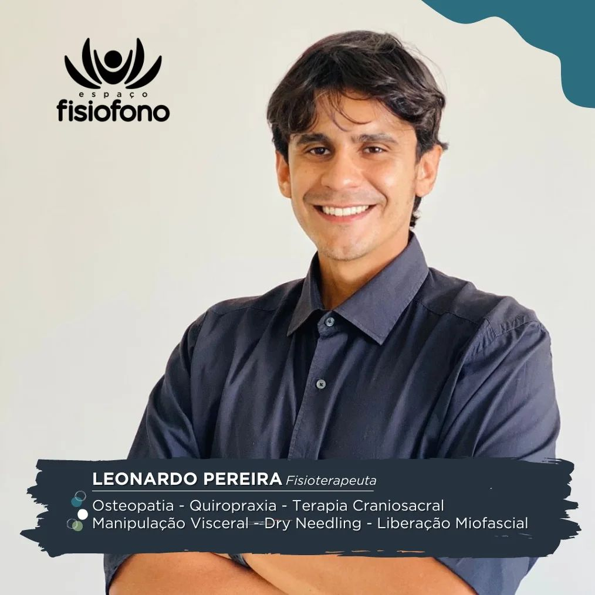
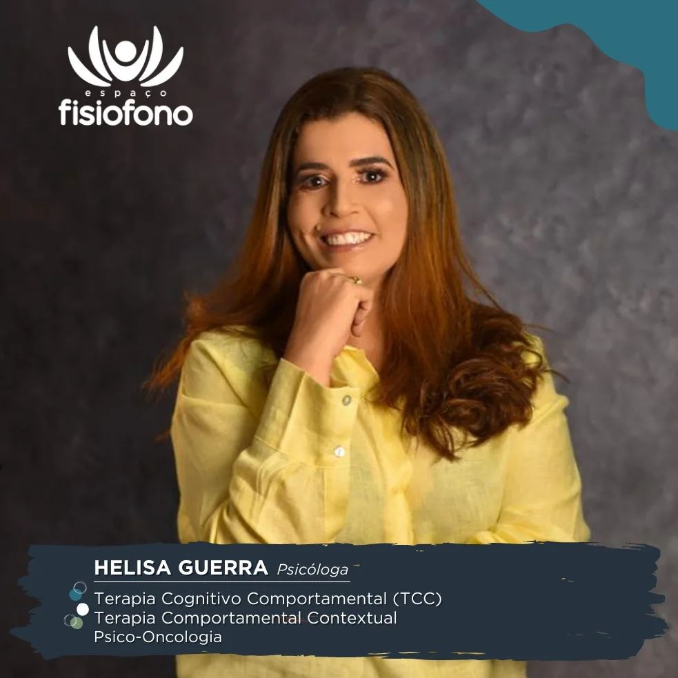
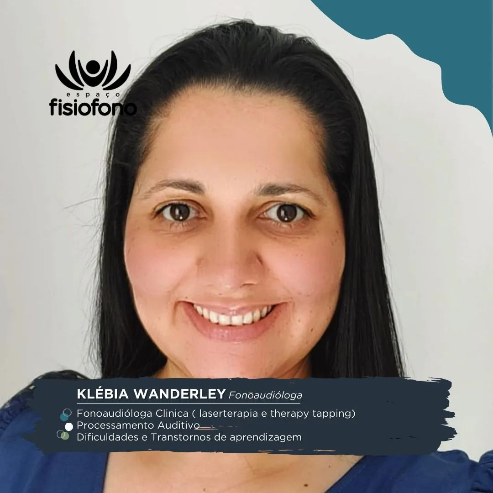
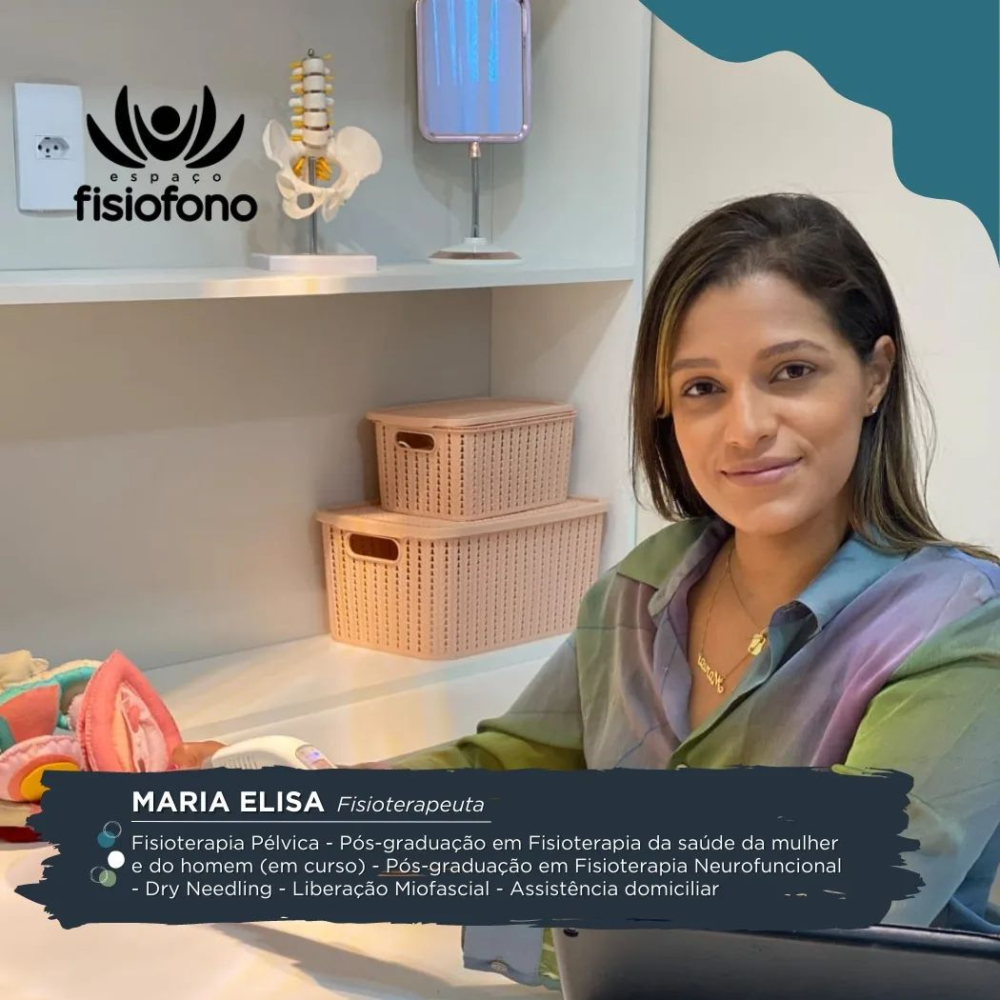
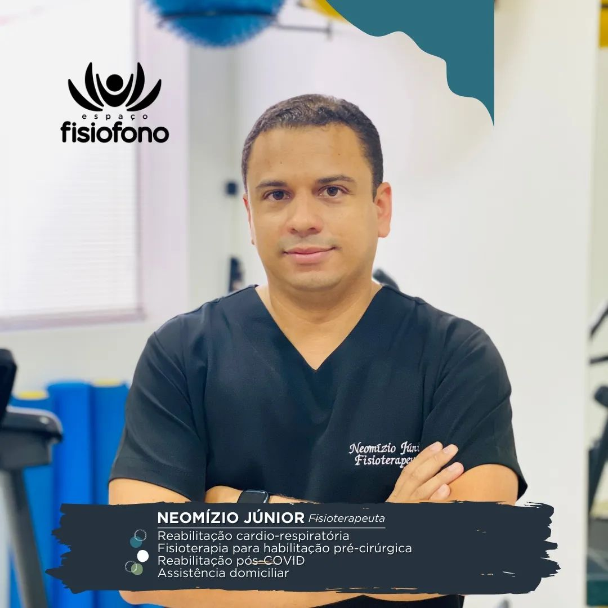

Conheça os profissionais responsáveis pelo cuidado, saúde e bem-estar dos nossos pacientes.

Fisioterapeuta
[Adicione aqui descrição, experiência, especializações e informações.]

Fisioterapeuta - Pilates
- Pilates Clássico
- Pilates Avançado
- Pilates para as Disfunções da Coluna Vertebral
- Mat Pilates
- NeoPilates I e II
- Neo Clínico I e II
- Trend Pilates
- Gravity Pilates
- Cadeias Musculares
- Reabilitação Funcional

Fisioterapeuta
- Osteopatia
- Quiropraxia
- Terapia Craniosacral Manipulação Visceral --Dry Needling
- Liberação Miofascial

Psicóloga
- Terapia Cognitivo Comportamental (TCC)
- Terapia Comportamental Contextual
- Psico-Oncologia

Fonoaudiologa
- Fonoaudióloga Clinica (laserterapia e therapy tapping)
- Processamento Auditivo
- Dificuldades e Transtornos de aprendizagem

Fisioterapeuta
- Fisioterapia Pélvica
- Pós-graduação em Fisioterapia da saúde da mulher e do homem (em curso)
- Pós-graduação em Fisioterapia Neurofuncional Dry Needling
- Liberacão Miofascial
- Assistência domiciliar

Fisioterapeuta
- Reabilitação cardio-respiratória
- Fisioterapia para habilitação pré-cirúrgica
- Reabilitação pós-COVID
- Assistência domiciliar
Atendimento especializado em saúde mental, ansiedade, depressão e acompanhamento clínico.
Reabilitação física, fortalecimento muscular e recuperação funcional.
Ajustes posturais e alinhamento corporal para mais mobilidade e conforto.
Acompanhamento emocional e desenvolvimento da saúde mental e qualidade de vida.